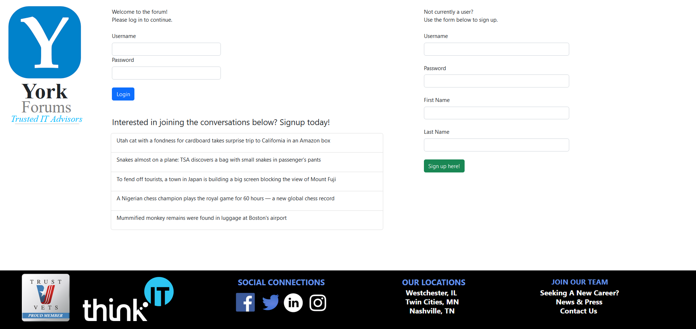

Hi, I'm Tyler Baxter. Thanks for checking out my portfolio!
I'm a military veteran, physics nerd, gamer, and spoiled cat owner.
Hi, I'm Tyler Baxter. Thanks for checking out my portfolio!
I'm a military veteran, physics nerd, gamer, and spoiled cat owner.
(Don't be fooled by the angelic appearance.)
From Science to Software Engineering
During my undergrad, I was heavily involved in extracurricular scientific research.
My projects spanned the subjects of astrophysics, laser ablation, and material science.
Click here to learn more.
After graduating, I became eager to find somewhere new to put my skills and passion for learning
new things to good use. Since then, I've discovered that joining the world of software engineering
was exactly what I was looking for.
During my undergrad, I was heavily involved in extracurricular scientific research.
My projects spanned the subjects of astrophysics, laser ablation, and material science.
Click here to learn more.
After graduating, I became eager to find somewhere new to put my skills and passion for learning
new things to good use. Since then, I've discovered that joining the world of software engineering
was exactly what I was looking for.
My 2024 GitHub Activity
Projects
York Forums
My first full stack web application created in the style of an online forum resembling Reddit.
This was submitted for the final assignment of the York Solutions apprenticeship program.
Note: Project was for educational purposes only. No official identification with
York Solutions is intended or should be inferred.
Project Overview
Allows users to register, login, and logout, as well as perform CRUD (Create/Read/Update/Delete)
operations on topic threads to foster online discussion.
Front-end Tech Stack & Purposes
- General-purpose appearance modification.
- Hosts the webpage design, elements, and scripts.
- Dynamically generates HTML elements.
- Manages logic and behavior through state hooks and a reducer.
- Provides dispatch and selector functions for updates to state.
- Provides pre-formatted button and modal elements.
Back-End Technologies & Purposes
- Logic engine for REST endpoints and database functionality.
- Provides REST boilerplate configuration for swift setup.
- Build automation and compilation framework.
- Database for storing user profiles and forum thread information.
- Used for management and containerization of PostgreSQL data.
- Provided verification of proper endpoint setup.
Assignment Statement
Develop a functional full stack web application using the specified tech stack to demonstrate
proficiency in building robust, secure, and scalable web solutions.
Required features:
User Authentication
Design a main sign-in page allowing a user to sign up by creating
a username and password.
Implement user authentication functionality by enabling users to log
in with their credentials.
Prevent further access into the application without properly identified credentials.
Data Persistence
Store user information securely in the PostgreSQL database for future retrieval.
Assign a unique UUID to each user account for identification purposes.
User Interaction
Enable logged-in users to perform CRUD operations on the application state.
Ensure that changes made by users persist even after logout and are
visible to other users upon login.
User Interface
Define the user interface using JavaScript, ensuring that HTML is generated
dynamically through JavaScript functions.
Dependency Restriction
Strictly adhere to the specified tech stack; no additional dependencies are allowed.
Project Visuals
The main sign-in page:

Sign-up process:
Results
Research
Assessment of an Interstellar Photon Propulsion Concept
Assessment of an Interstellar Photon Propulsion Concept
This research project explored the theoretical performance of a solar sail using a spherical
configuration for purposes of interstellar travel.
Publications
Sinko, J. E., Baxter T. (2015).
Assessment of an Interstellar Photon Propulsion Concept.
Proceedings of the Joint Conference of 30th International Symposium
on Space Technology and Science, 34th International Electric Propulsion Conference,
and 6th Nano-satellite Symposium. Hyogo-Kobe, Japan.
Proceedings of the Joint Conference of 30th International Symposium
on Space Technology and Science, 34th International Electric Propulsion Conference,
and 6th Nano-satellite Symposium. Hyogo-Kobe, Japan.
IEPC:
2015-144 / ISTS-2015-b-144
Thrust Assessment for a Laser Tractor Beam Target
Photo: St. Cloud State University/Gary Bailey
This research project was an experimental development of a 'tractor beam' device that could
be used to retrieve adrift astronauts using laser ablation of chemical powders.
Awards
$1000 Grant Funding Award (Spring 2015) St. Cloud State University
$1000 Grant Funding Award (Fall 2015) St. Cloud State University
$1000 Grant Funding Award (Spring 2016) St. Cloud State University
$1000 Grant Funding Award (Fall 2016) St. Cloud State University
$1000 Grant Funding Award (Spring 2017) St. Cloud State University
Sinko, J. E., Baxter, T., Gill, M., Schlecht, A. C. (2017).
Thrust Assessment for a Laser Tractor Beam Target. Proceedings of the 53rd AIAA/SAE/ASEE Joint Propulsion Conference.
Atlanta, GA.
DOI:
10.2514/6.2017-4960
Laser-Induced Carbon-Doped Carbonate Propellant Decomposition for Beamed Energy Propulsion
This research project was a theoretical attempt to find an alternative explanation to dark matter
by introducing a 'photonic drag' term in the classical analysis of Newton's Laws applied to the
Sun as it revolves around the Milky Way.